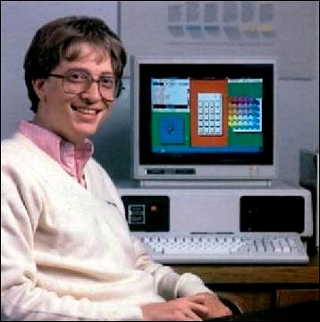
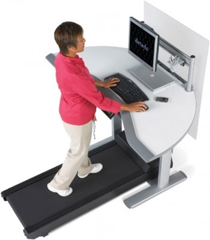
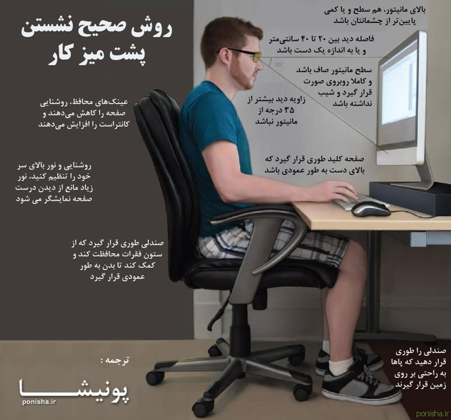
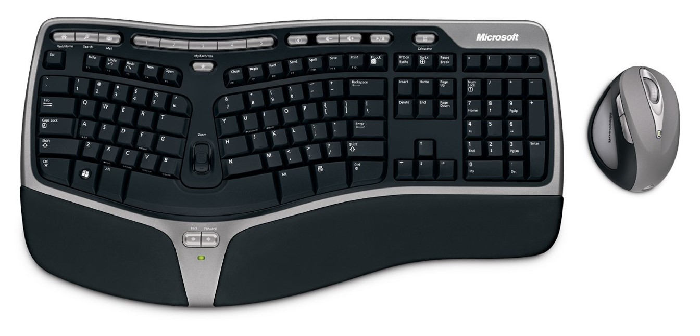
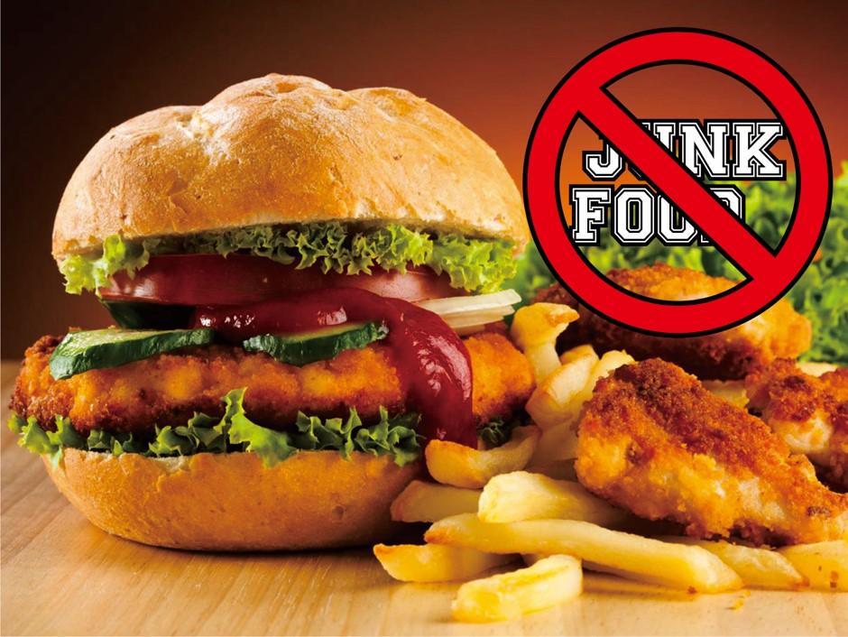
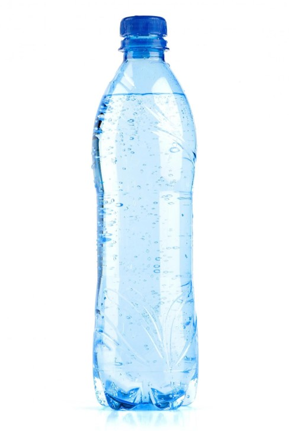
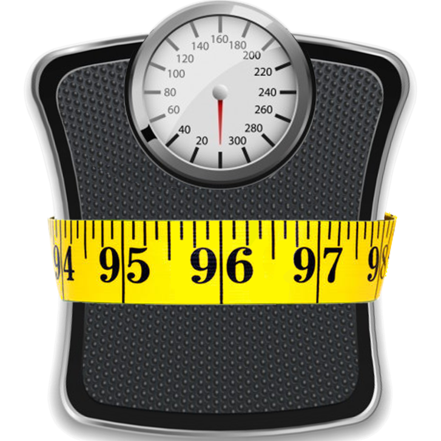
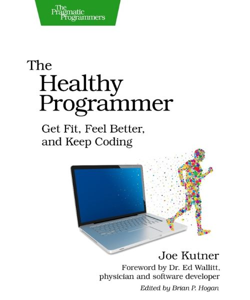

سلامت برنامهنویسان
یا چطور از برنامهنویسی جان سالم در ببریم؟
رفع مسئولیت
- این یک ارائه صد در صد علمی نیست
- این ارائه راهکارهای توصیه شده را پیشنهاد میدهد
- سلامتی پارامترهای مختلفی دارد و توجه به آن شخصی است
شما هم از تجربهها بگویید
برنامهنویسی یک شغل نشستنی است

- مثل سایر شغلهای اداری
پشت میز نشینی طولانی دارد
- و بنابراین مشکلات پشت میز نشینی
را هم دارد
نکته اول: هر از گاهی بلند شوید

- خیلی ساده گاهی بلند شوید
و قدمی بزنید. نیاز به تجهیزات
پیشرفته نیست
- اگر درگیر کار میشوید و فراموش میکنید
از نرمافزارهای مخصوص یا هشدار گوشی
برای یادآوری استفاده کنید
نکته دوم: پشت میز درست بنشینید

نکته سوم: از تجهیزات مناسب استفاده کنید

نکته چهارم: فست فود نه!

نکته پنجم: آب زیاد بنوشید

نکته ششم: وزنتان را مانیتور کنید

نکته هفتم: خوب و به اندازه بخوابید
نکته هشتم: ویتامین D بیشتری به بدن برسانید
